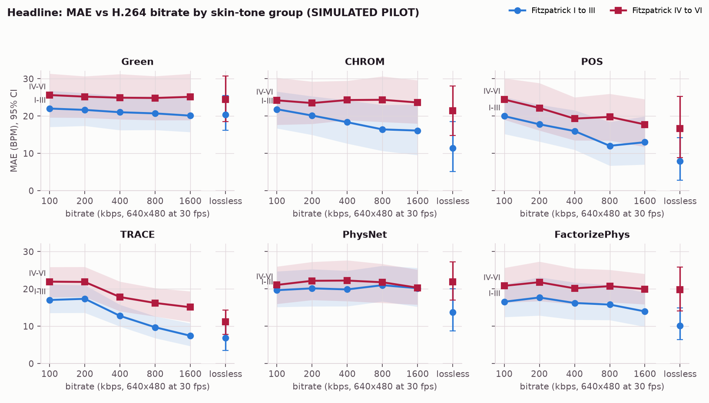
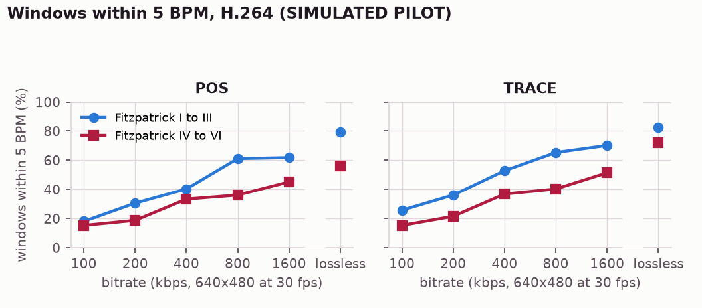

Compression did not widen the skin-tone gap. Darker skin was already near its failure plateau at every bitrate, and compression dragged lighter skin down to meet it.
Simulated pilot. All results below come from a simulated pilot: real codecs, real detector and real pipeline applied to rendered faces whose skin-tone physics is modelled. They test the mechanism, not real people. The same code runs unchanged on recorded participants; that collection is the next step.
The question
Remote photoplethysmography (rPPG) reads the pulse from the tiny colour change that each heartbeat causes in the face. It is known to be less accurate on darker skin, and separately known to degrade under video compression.
Nobody has measured the interaction.
Why a systems venue
Bitrate is a network decision. If a weaker pulse (more melanin) crosses the codec's noise floor at a higher bitrate, the populations already disadvantaged by the physics are also those hit hardest by constrained connections, and the two effects compound.
In Bangladesh the dominant skin tones sit in the affected range, and low-bandwidth telehealth is routine.
The gap
An OpenAlex search found 2,023 rPPG papers: 51 on compression, 121 on skin tone, 3 mentioning both, and none measuring their interaction.
"Several major phenomena affecting rPPG signals have been studied (e.g. video compression, distance from person to camera, skin tone, head motions)." Rarely Considered Factors, CVPRW 2020.
Result MAE vs H.264 bitrate, 18 volunteers per group

For POS under H.264, the dark-minus-light error gap was 8.8 BPM on lossless video and 4.4 BPM at 100 kbps. The interaction coefficient was 0.40 BPM per doubling of bitrate (95% CI -0.57 to 1.37, p = 0.420; subject bootstrap -0.77 to 1.65). The interval includes zero: in this sample the curves do not fan apart detectably. Windows within 5 BPM: 79% lighter vs 56% darker on lossless video, 18% vs 15% at 100 kbps.
Why the curves meet
Mean error cannot widen once one group is already failing. The share of windows within 5 BPM shows it: for POS, 79% lighter vs 56% darker on lossless video, 18% vs 15% at 100 kbps.

Mechanism
Codecs keep colour at a quarter of the resolution, quantise small changes away, and freeze regions that barely change. The pulse is a change of well under one pixel level. Pulse fidelity is the correlation of the decoded skin trace with the true pulse on a still face (1 intact, 0 gone):
0.92 / 0.84lossless, lighter / darker
0.61 / 0.37H.264 1600 kbps
0.46 / -0.11H.264 100 kbps
Mitigation: TRACE
Green, CHROM and POS run in parallel. Each is scored from its own spectrum, and a pulse-blind artifact reference (brightness with the pulse direction removed) masks motion and lighting frequencies before the spectra are fused.
On the full grid the lowest error on lossless video came from TRACE (9.0 BPM) and at 400 kbps from TRACE (15.3). TRACE scored 9.0 and 15.3; POS 12.2 and 17.7; POS with the artifact mask alone 9.1 and 16.1; FactorizePhys 15.0 and 18.2. TRACE's lossless skin-tone gap was 4.3 BPM against 8.8 for POS.
The first TRACE design (spectral score only) lost to POS on held-out data and was replaced; both stay in the ablation.
Classical vs learned
MAE, BPM
Lossless, I-III
Lossless, IV-VI
100 kbps, I-III
100 kbps, IV-VI
POS
7.9
16.6
20.0
24.4
TRACE
6.8
11.1
17.0
22.0
PhysNet
13.7
21.9
19.7
21.1
FactorizePhys
10.2
19.8
16.6
20.8
Neural models: pretrained rPPG-Toolbox checkpoints (trained on PURE, never evaluated on it), used only as baselines. Nothing in the TRACE estimation path is learned.
How it works
Face and skinHaar, phase correlation
Detrendconvolution
CHROM, POSfixed projections
Bandpass 0.7 to 4 Hzconvolution
Spectrum, score, fuseFourier transform
Harmonic checkFourier series
Design
36 simulated volunteers, Fitzpatrick I to VI, 60 s each, known beat times.
Lossless source, then H.264, H.265, VP9 at 100, 200, 400, 800, 1600 kbps, plus lossless RGB, YUV 4:4:4 and 4:2:0 controls.
Model: error ~ log2(bitrate) x dark + (1 | subject); the interaction term is the claim.
Limits
Skin-tone physics is modelled, not measured: a simulated fan is evidence about the mechanism, not about people.
One base face, fixed lighting and camera.
TRACE's artifact reference leaks pulse on light skin at low motion.
Next
Record Fitzpatrick III to VI volunteers in Dhaka, lossless, with a pulse oximeter.
Power analysis: more than 40 per group detect a 1.0 BPM-per-doubling interaction at 80 percent power.